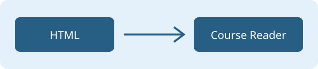

Эта страница должна быть белой с синим заголовком, независимо от темы панелей.

Следующая локальная страница · К нижнему разделу
Контрольный текст в начале длинного материала. Прокрутите вниз, затем перейдите на другую страницу и вернитесь.
Контрольный текст внизу. Закройте приложение здесь и повторите запуск для проверки восстановления.
Наверх без якоря